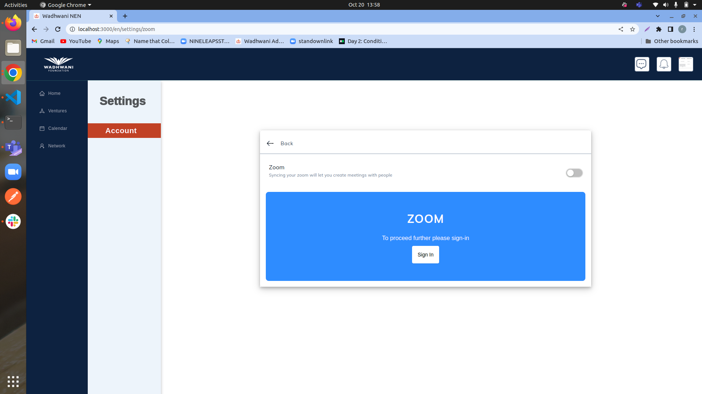
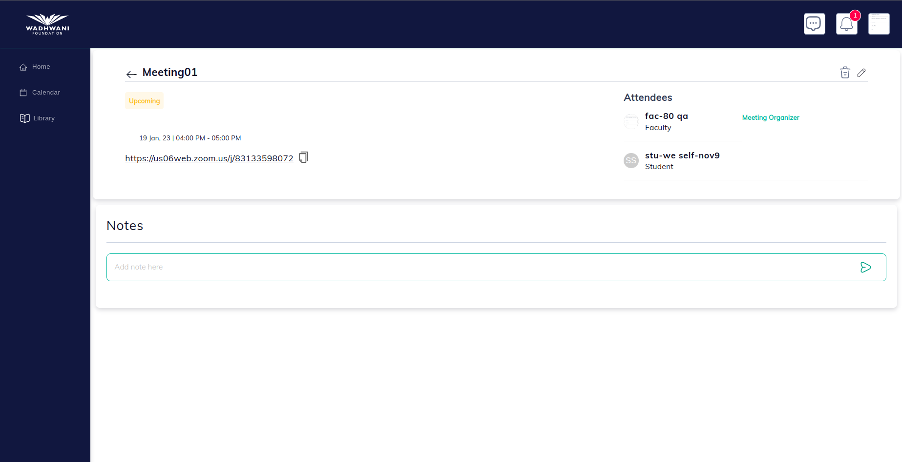

The Zoom integration that's available within your Wadhwani Entrepreneur enables you to connect your Zoom account directly and schedule Zoom Events right within your Wadhwani Entrepreneur platform.
In order to use this option, you will need to have a Zoom account. Zoom offers a variety of plans and features, including the ability to have a free account.
Connecting Your Zoom Account
You can connect your zoom account in two ways:
-
When you are creating or editing an Event in your Wadhwani Entrepreneur Platform, you'll see an option in the Event Type dropdown to select Zoom.
Once you've selected the create event, you'll see a prompt to connect your Zoom account.

Choose "Sign In" to connect your existing Zoom account.
In order to use the Zoom integration and ensure we can properly sync your Wadhwani Entrepreneur Zoom meetings to your Zoom account, you will need to accept the following agreements and confirm access.
-
You can connect your zoom account from the user settings page in your wadhwani entrepreneur account. The zoom toggle will on when the zoom account is successfully linked.

Scheduling a Zoom Event
Once you've successfully connected a Zoom account to your Wadhwani Entrepreneur account, you'll see full details of the Zoom Event.
Note: For Events that use our Zoom integration, you must be the Event Creator in order to edit Event Settings. This is because the connected Zoom account is specific to the person who created the Event.
How Zoom Events and Settings Sync Between Wadhwani Entrepreneur and Zoom.us
When using the Zoom integration in Wadhwani Entrepreneur, all Zoom meetings or webinars that you create in your Wadhwani Entrepreneur will automatically sync to your account on Zoom.us. This means that if you change something in the Zoom Event in your Wadhwani Entrepreneur, it will automatically change on Zoom.us.